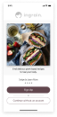
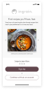
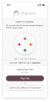
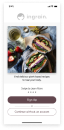
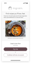
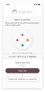
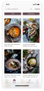
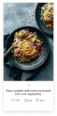
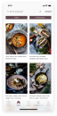
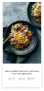

ROLES
- User Interface Designer
- User Experience Designer
DELIVERABLES
- High-fidelity mockups
- Style guide & UI components
- Low-fidelity wireframes
- Usability test findings
- Logo design and branding
SPECIFICATIONS
DURATION
- 4 Weeks
TOOLS
- Figma
- Sketch app
- Photoshop
Overview
Ingrain is a plant-based, meal-planning app that was conceived as a response to the diabetes epidemic that is presently ravaging North America. Its purpose is to equip those who often feel as though they’re at the mercy of a chronic disease like diabetes—to reverse their diagnosis with plant-based foods.
On a personal note—as someone living with Type-2 diabetes, the connection between food and health hits close to home for me. Luckily, my mentor Terry Million is passionate about this subject as well. I am extremely grateful to him for his encouragement throughout the design process.
A case study in three parts
I broke down the design process behind ingrain into three succinct parts. This second part explains the evolution of the user interface design from low to high-fidelity, and the user test findings that led me to change the art direction to increase legibility of content.
View the process of applying motion design principles in creating high-fidelity interactive prototypes in Part 3: Interaction Design.
See the strategic pivots that redefine the scope of the MVP in Part 1: UX Strategy.
Ingrain Part 2: User Interface Design
This is a story of putting usability ahead of expressivity—by ruthlessly editing my work to a level of simplicity that optimizes content legibility.
Here is a peek at the final design of the app screens:
Onboarding
 







Meal-planning
 





Structure
Visual problem-solving
App navigation and structure
Building a flat navigation system within the app architecture facilitates quick referencing and quick task switching—both of which are crucial in a recipe app that requires users to go from browsing behavior to saving to referencing content on-the-go. This is achieved by incorporating a set of tab bars that display five frequently-accessed locations: home, tracker, saved, shopping list, and profile.
The fact that users are likely to use the app on-the-go necessitates a tight information structure where any destination in the app is never more than three levels deep from the home screen. From studying the app architecture of the Kitchen Stories app, I learned that the secret to a clean, tight user flow in a primarily content-driven app is to limit user engagement to the smallest unit of information: the individual recipe articles. Implementing that makes for a cleaner app structure.

Creating an onboarding sequence
Onboarding screens behave very much like a sequence of modal views. The challenge was to keep the user’s attention focused on the task at hand. It was important to respect the user by being transparent about why Ingrain asks the questions it does to construct a dietary profile. This is achieved by displaying titles that identify the task at hand. Showing how many steps are left, and giving users the option to skip parts of the onboarding process are just some of the ways to respect users.

First design iteration
Since most food and cooking apps favor a light-UI scheme, I experimented with creating a dark UI scheme with a palette of earth-tones for the purposes of differentiating Ingrain’s branding in the meal-planning space.


Validate
testing the medium-fidelity wireframe
Responding to User Feedback
“The onboarding process is hard to follow.”
I learned to anticipate the areas of confusion where users would need help and added prompts to guide users during the onboarding process. I discovered that brief prompts that direct the user to take action and then see the result of their action is a much more effective and funner way to educate the user about the app interface than blocks of instructional text.


“There’s a lot going on, and tapping on the circle to record food is not intuitive.”
The presence of many controls in such a small screen made it confusing for users to find their way in the app. I clarified their path by eliminating controls that were unnecessary to the task at hand to decrease the need for decision-making and increase clarity on where to go to accomplish their task.


“Most of the time I already have 80% of the ingredients, I would like to add only some ingredients to my shopping list.”
This is an instance where user feedback uncovers key insights about the posture of a feature. In response to the user’s goals, the shopping list feature changes its posture from a record of many mealplans to a custom check-off grocery list.


Usability was being undermined by expressivity
After testing the medium-fidelity prototype with a dark UI color scheme, I concluded that much of the users’ confusion in navigating the app was due to a lack of graphic hierarchy. I had initially chosen a palette of earth-tones because of the colors of the plant-based foods themselves and for the purposes of differentiating Ingrain’s branding in the meal-planning space.

By the end of user testing, it was clear that the expressivity of the style guide and color palette was undermining the usability of the app.


Redesign
Overhauling the style guide
It was clear that a style guide redesign was needed for the sake of enhancing usability. I decided to abandon the dark and tonal grey color palette in favor of a light UI theme.
Redesigning the palette
Ingrain’s newly-redesign style guide takes a decidedly light-UI direction. It comprises of mostly neutrals with two earth tones that serve as ingrain’s primary colors.
Style Guide
I learned that when working with muted colors, it is critical to create shade variations based on the desired contrast level that one wishes the foreground content to have against the background content. The primary color shades were inspired by the fruits plum and fig. The brights color group was added for accents and attention-calling elements.


Logo design process
The symbol of a mortar and pestle was chosen because it connects the idea of food with medicine. As one of the oldest food-preparation instruments used in cultures from around the globe, it is also used by apotecharies to crush medicinal herbs. From a branding standpoint, it stands out nicely against the logos of competitors that usually highlight familiar cooking or eating utensils.

Synthesize
The final design
In retrospect, the most challenging portion of developing the Ingrain app interface is integrating the gorgeous food photography with the vectorized content of the meal tracker. To lessen the jarring juxtaposition of both types of content when they grace the same screen, I opted for simplified outline shapes over the detailed vector food shapes whose cartoony realism competed with the realism already present in the food photography.